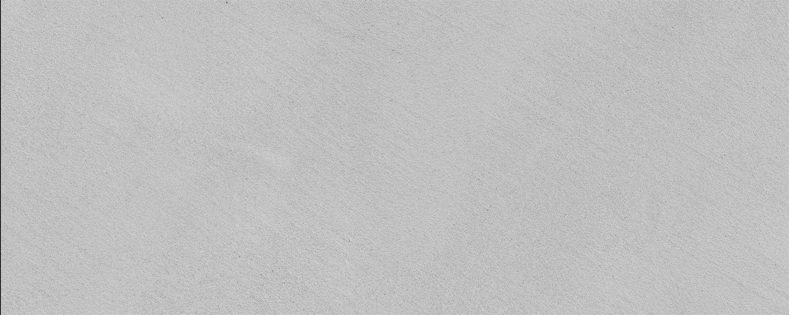

Efectto Quartz Small

Efectto Quartz Medium Grain es el listo al uso de Topciment® destinado a ser el acabado del Sistema Suelos. Este material de grano medio se aplica en una sola mano después de aplicar el Efectto Quartz Super Grain.
Ver másEfectto Quartz Super Grain el listo al uso de Topciment® destinado a ser la base del Sistema Suelos aunque se puede utilizar como acabado. Este material de grano grueso se aplica en dos manos antes de aplicar el Efectto Quartz Medium Grain.
Ver más